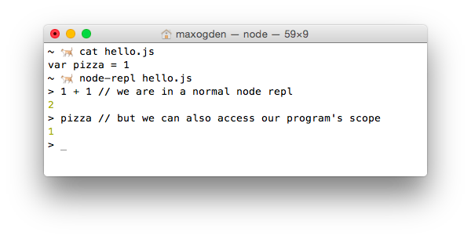

An interactive console for node
You can install node-repl with npm.
Recently I was asked if there was an equivalent of the Interactive Ruby Shell (IRB) for node. IRB is great because it lets you quickly poke around in your program while it is running without having to set up breakpoints or print messages out to the console.
Node ships with a repl that you can run by simply typing node, and you can run a program by running node program.js, but you cannot both run a program and open a repl at the same time.
To solve this, with the help of my friends Mathias and Chris I whipped up a command-line module called node-repl.
Here's how to use it:

When you run a program with node-repl program.js, it both spawns your program but also opens a repl. The useful part is that the repl is executing code in the same JavaScript scope that your program is running in.
The functionality offered by node-repl seems simple at first, but underneath the hood it is doing a few tricky things: injecting the repl code, intercepting node's require and patching in eval from your program's scope into the repl.
Node has a repl module in the core library that makes it easy to implement a fully featured repl. By default the repl executes code in it's own scope, but in order to get the desired IRB-style functionality (e.g. where pizza is available to the repl as in the above example) we want the repl to execute in the same scope as the program.
The repl code itself that node-repl injects is relatively simple:
;(function() {
var repl = require('repl')
var os = require('os')
var empty = '(' + os.EOL + ')'
repl.start({
input: process.stdin,
output: process.stdout,
eval: function(cmd, context, filename, callback) {
if (cmd === empty) return callback()
var result = eval(cmd)
callback(null, result)
}
})
})();
The whole thing is wrapped in an IIFE to avoid altering any external state in the users program, since this code is concatenated onto the end of the program. I very rarely use IIFEs any more because node's module system handles isolating files for you automatically (and if you use browserify you can use node's module system for client side code), but this case is an exception.
The code var empty = '(' + os.EOL + ')' is specific to how node's repl works. When you hit <return> in node's it takes whatever you typed and wrapps it in parentheses. For example, if you enter var x = 1 and hit return you will end up with (var x = 1\n) on OSX/Linux or (var x = 1\r\n) on Windows. The code require('os').EOL gets the correct line ending for the users current OS. Also (warning: this is just a parlour trick) try going into the default node repl and typing console.log)(42. Even though you didn't type valid JS code, it ends up working because it gets turned into (console.log)(42)\n by the repl.
When you run a program with node, e.g. node hello.js or require('hello.js'), node takes the contents of hello.js and wraps them in a function like this:
(function (exports, require, module, __filename, __dirname) {
var pizza = 1
});
Wrapping your code in a a function like this causes a new scope to be created for your code to run in. You could have two different modules that both set var pizza to different values, and because of the way that JavaScript's function scope works they can both exist in their own scopes without conflicting. This property of JavaScript is what allows node's nested dependency system to work and is extremely simple and powerful.
The problem with this for us is that your code is running in it's own scope, and node-repl needs access to it! This is why we "inject" (in this case by concatenating) our repl code into your code before it gets required.
Node has a somewhat obscure API called require.extensions that lets you change what happens when files of a certain file extension are required. For node-repl we use this to rewrite the users program before it gets executed.
The following code is from https://github.com/maxogden/node-repl/blob/master/bin.js
var original = require.extensions['.js']
require.extensions['.js'] = function(module, filename) {
if (filename !== file) return original(module, filename)
var content = fs.readFileSync(filename).toString()
module._compile(stripBOM(content + replCode), filename)
}
require(file)
First we store the original .js require function, so that we can call it for files other than our program. Then we define our own custom require.extension that emulates what the default .js require code does, but does content + replCode first, which 'injects' our repl into the users program code. We reverse engineered the default .js functionality by looking at the output of console.log(require.extensions['.js']).
Finally, we require(file) which triggers the extension we just defined with the users program. This was confusing to me at first because the users program may not have module.exports in it, and it seemed unintuitive to me to require something when I really just wanted to execute it, but this is in fact a valid way to simply run code. module.exports defaults to an empty object ({}), meaning you can simply use require to run a JS program in it's own scope.
evalThe node repl supports passing in a custom eval function, which is how we are able to swap out it's default eval with the eval from the program scope.
After being wrapped by require and having our repl injected the code looks like this:
(function (exports, require, module, __filename, __dirname) {
var pizza = 1
;(function() {
var repl = require('repl')
var os = require('os')
var empty = '(' + os.EOL + ')'
repl.start({
input: process.stdin,
output: process.stdout,
eval: function(cmd, context, filename, callback) {
if (cmd === empty) return callback()
var result = eval(cmd)
callback(null, result)
}
})
})();
});
The trick here is that eval above is the eval from the same scope as what the program is running in, which gives it access to local variables like pizza.
Happy hacking!